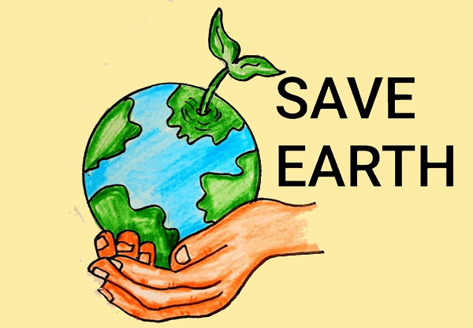

Save Earth

Ten Simple Things You Can Do to Help Protect the Earth
1. CONSERVE WATER
The little things can make a big difference. Every time you turn off the water while you’re brushing
your teeth, you’re doing something good. Got a leaky faucet? You might be dripping as much as 90 gallons
(340 liters) of water down the drain every day [source: EPA]. So fix it! It’s easy and cheap. And stop
drinking bottled water. Switch to filtered tap water. You’ll save a ton of cash and help reduce a ton of
plastic waste in the process.
2. BE CAR-CONCIOUS
If you can, stay off the road two days a week or more. You’ll reduce greenhouse gas emissions by an
average of 1,590 pounds (721 kilograms) per year [source: EPA]. It’s easier than you think. You can
combine your errands — hit the school, grocery store and dog daycare in one trip. And talk to your boss
about teleworking. It’s a boon for you and your company. But being car conscious also means maintaining
your car on a regular basis. You can improve your gas mileage by 0.6 percent to 3 percent by keeping
your tires inflated to the proper pressure, and be sure to make necessary repairs if your car fails
emission
3. WALK, BIKE OR TAKE PUBLIC TRANSIT
Walking and biking are obvious ways to reduce greenhouse gases. Plus you’ll get some good cardio and
burn some calories while you do it. If you live in an area that’s not walkable, take advantage of your
local mass transit if you can. Or carpool. Even one car off on the road makes a difference.
4. REDUCE, REUSE, RECYCLE
You can help reduce pollution just by putting that soda can in the recycling bin. It really does make a
difference. Paper, too. Case in point: If an office building of 7,000 workers recycled all of its office
paper waste for a year, it would be the equivalent of taking almost 400 cars off the road [source: EPA].
But you can also take reusable bags to the grocery, and avoid using disposable plates, spoons, glass,
cups and napkins. They create huge amounts of waste. And buy products that are made of recycled
materials. It all makes a difference.
5. GIVE COMPOSTING A TRY
In 2015, (the last year figures were available) Americans generated 262.4 million tons (238 metric tons)
of trash. Only 23.4 million tons (21.2 metric tons) of that was composted. Some was recycled and some
was combusted for energy, but almost half of it — 137.7 million tons (124.9 metric tons) — ended up in
the landfill. Imagine if you could divert more of that to your own compost? It would help reduce the
amount of solid waste you produce, and what eventually winds up in your local landfill. Plus, compost
makes a great natural fertilizer.
6. SWITCH TO LEDs
Compact fluorescent light bulbs (CFLs) are great. They can last 10 times longer than incandescent bulbs
and they use at least two-thirds less energy, but even CFLS have issues. They’re hard to dispose of
because they contain mercury. Enter light-emitting diode, or LED bulbs. They emit light in a very narrow
band wavelength so they’re super energy-efficient. Start replacing your old incandescent bulbs with LED
bulbs now (if you haven’t already). They do cost more than CFLs and incandescents, but equivalent LED
bulbs can last around 25,000 hours compared to the 1,000 hours that incandescent bulb might have lasted.
7. LIVE ENERGY WISE
Make your home more energy efficient (and save money). Your home’s windows are responsible for 25 to 30
percent of residential heat gain and heat loss. If they’re old and inefficient, consider replacing them.
Also be sure your home has proper insulation. Insulation is measured in terms of its thermal resistance
or R-value — the higher the R-value, the more effective the insulation. The amount of insulation your
home needs depends on the climate, type of HVAC system, and where you’re adding the insulation. Smaller
things you can do right away include replacing your air filter regularly so your HVAC system doesn’t
have to work overtime. Keep your window treatments closed when it’s extremely hot and cold outside. You
can also consider installing a programmable thermostat like Nest so your system isn’t running (and
wasting energy) when you’re not home.
8. EAT SUSTAINABLE FOOD
Today, large-scale food production accounts for as much as 25 percent of the greenhouse emissions. So
how do you eat sustainably? Choosing food from farmers that aim to conserve the natural resources and
have as little impact on the land as possible. But even buying as much as you can from local farmers
makes a different. Eating more whole grains, vegetables, fruits and nuts, and less red meats and
processed foods does too. Grow your own fruits and vegetables.
9. PLANT A TREE (OR TWO)
In 2018 the United Nations’ Intergovernmental Panel on Climate Change (IPCC) report, the U.N. suggests
an additional 2.5 billion acres (1 billion hectares) of forest in the world could limit global warming
to 2.7 degrees Fahrenheit (1.5 degrees Celsius) by 2050. That’s a lot of trees, but you could plant one
or two, right? One young tree can absorb CO2 at a rate of 13 pounds (5 kilograms) per tree. Every.
Single. Year. And that’s just an itty bitty baby tree. Once that tree reaches about 10 years old, it’s
at its most productive stage of carbon storage. Then it can absorb 48 pounds (21 kilograms) of CO2 per
year. Trees also remove all other kinds of junk from the air, including sulfur dioxide, nitrogen oxides
and small particles. So go ahead, plant a tree. It’s good for everybody.
10. GIVE UP PLASTICS
The statistics are shocking: People around the world buy 1 million plastic drinking bottles every
minute, and use up to 5 trillion single-use plastic bags every year. Humans are addicted to plastic, and
hardly any of it — about 9 percent — gets recycled. A staggering 8 million tons (7.25 metric tons) ends
up in the ocean every year. Break the cycle. Stop buying bottled water. Say no to plastic shopping bags
and use cloth bags instead. Don’t use plastic straws. Drink from a reuseable cup instead of a plastic
one. Avoiding plastic can divert a ton of waste from the oceans and landfill.
.CAUSES THAT HARM ENVIROMENT
Pollution
Deforestation
Poaching